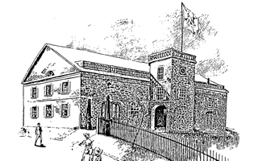

The Clock Tower Building, known as Building 104, is a 2½-story red brick building rising from a granite water table set on rubble stone foundation. Three wood frame dormers project from the asphalt-shingled gable roof. Brownstone soffits run the full perimeter of the building below the roofline. Projecting from the east elevation is a three-story brick tower with a pyramidal roof; it originally contained the main entrance. The clock has been removed from the circular opening at the third story.
Building 104 was constructed as an ordnance storehouse for the New York Arsenal in 1850. It stands on a small rise, overlooking the original main dock area. The clock tower, a typical feature of arsenal storehouses, placed on the east side of the building, made it even more prominent.
It was a showpiece of the old Arsenal buildings. During the late 19th Century, a cobblestone pathway lined with cannonballs led to the dock from its front porch. In 1882 the building was converted from storehouse to a museum with offices and a meeting room. Fort Columbus post commander Major General Winfield Scott Hancock (1824-1886) established the Military Service Institution of the United States in 1882 on Governors Island, using this building as its headquarters. The mission of the M.S.I. was to provide "literary, historical, and scientific purposes" for the Army. He also created an Army museum in Building 104; the collection was moved to the Smithsonian Institution when World War I broke out. One of the most notable parts of the collection was the stuffed remains of Rienzi (later named Winchester), General Philip Sheridan's charger in numerous Civil War campaigns. Today the horse is in a very large display case at the Smithsonian.
After the New York Arsenal left Governors Island in 1920, the building was given to the Second Corps Area of the Army. Since then it has been used as offices.

The Clock Tower in an 1885 Army illustration.